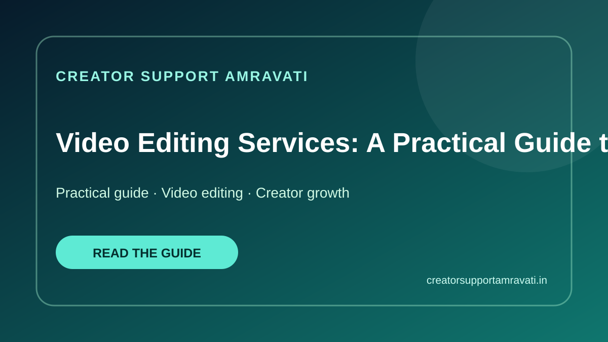

A good video is more than a sequence of clips. Clear storytelling, clean sound, purposeful pacing, readable titles and the right export format all influence how viewers experience it.
What do video editing services include?
A project may include footage review, story selection, rough cuts, trimming, transitions, colour correction, audio balancing, music placement, captions, titles, motion graphics and final exports. Not every project needs every service. A talking-head video may need clean cuts and sound; a product film may need detailed colour work and graphics. Ask the editor to list what is included rather than relying on the phrase “complete editing”.
Choose the service according to your video
For Instagram Reels and YouTube Shorts, prioritise a strong opening, vertical framing, subtitles and clear pacing. For YouTube long-form videos, focus on story flow, audio consistency and B-roll. Podcast editing often needs camera synchronisation, speaker switching, dialogue cleanup and short clips. Business videos need a clear message, brand consistency and a purposeful call to action.
What should you send before editing starts?
Share original footage, separate audio files, a short brief, target platform, aspect ratio, reference links, brand logo, correct spellings and any required disclaimers. Tell the editor which moments must remain. Organise files into folders and avoid compressed messaging-app copies when original files are available.
How to compare video editing companies
Review work similar to your project, not only a flashy showreel. Confirm deliverables, final duration, revision rounds, turnaround time, source-file policy, music and stock-asset licensing, confidentiality and payment milestones. A written scope prevents misunderstandings.
What affects the final cost?
Price usually depends on raw-footage length, final runtime, number of cameras, graphics complexity, audio repair, subtitles, urgency and number of versions. Request a project-specific quote with inclusions and exclusions.
Quality checklist before approval
Watch the export with headphones and on a phone. Check names, captions, logo placement, audio peaks, colour, framing, aspect ratio and final CTA. Confirm that the delivered file plays correctly and that you have the agreed usage rights.
Frequently asked questions
How do I choose a video editing service?
Review relevant samples, agree on deliverables and revisions, confirm timelines and get the scope in writing.
Can I work with an editor online?
Yes. Use a clear brief, secure file transfer and a documented review process.
What should I confirm before paying?
Confirm deliverables, payment milestones, revision policy, licences, turnaround and final file formats.
Topic tags
· · · ·
Suggested social hashtags
#videoeditingservice #videoeditingservices #professionalvideoeditor #reelsediting #youtubevideoediting
Need help with your next video?
Need an editing partner for Reels, YouTube, podcasts or business videos? Explore CSA’s video editing service and send your project brief for a tailored discussion.
← Back to all articles · Video editing service · Contact CSA